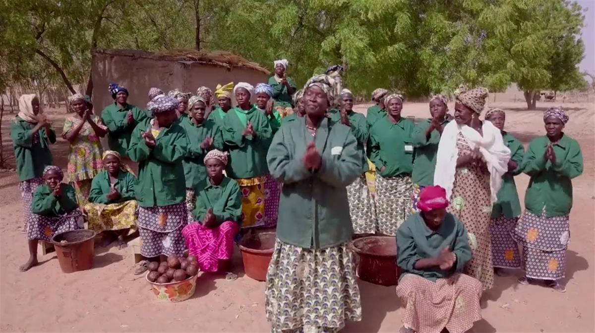

Out in the dusty plains of southern Mali, in the sprawling village of Samabogo, beneath the shade of the mango trees, something special is happening. The Soapmakers of Samabogo is a short film about friendship, entrepreneurship and female empowerment.
These are the 'Soapmakers of Samabogo'.
To find out more about the project, please visit: stories.wateraid.org/soapmakers-of-samabogo/
SOURCE: WATER AID
